Introduction to EDA functions
Manuel Gimond
2019-09-06
Source:vignettes/Introduction.Rmd
Introduction.RmdIntroduction
The tukeyedar package houses functions used in Exploratory Data Analysis (EDA). Most functions are inspired by work published by John Tukey, David Hoaglin and Frederick Mosteller (see references at the bottom of this document). Note that this package is in beta mode, so use at your own discretion. Many of the plots generated from these functions are not necessarily geared for publication or public dissemination but are designed to focus the viewer’s attention on the patterns generated by the plots (hence the reason for light colored axes and missing axis labels for some of the plots ).
The functions available in this package are listed below:
| Function | Description |
|---|---|
eda_boxls |
Parallel boxplots with level and spread equalization |
eda_ltrim |
Trim lower values of a vector |
eda_rtrim |
Trim upper values of a vector |
eda_ltrim_df |
Trim lower records of a dataframe |
eda_rtrim_df |
Trim upper records of a dataframe |
eda_re |
Re-express using Tukey powers or Box-Cox transformation |
eda_lsum |
Letter value summaries |
eda_sl |
Spread-level function |
eda_lm |
Generate scatter plot along with regression line and LOESS curve |
eda_3pt |
Generate 3-point summary of data and plot half-slopes |
eda_unipow |
Generate matrix of re-expressed univariate values based on ladder of powers |
eda_bipow |
Generate matrix of re-expressed bivariate values and plot 3-point summary half-slopes |
eda_rline |
Fit a three-group resistant line to bivariate data |
To access these functions, ensure that tukeyedar is properly loaded:
A brief description and examples of each function is presented next.
eda_boxls
Usage:
| Parameter | Description |
|---|---|
dat |
Data frame |
x |
Values column |
fac |
Factor to condition x on |
outlier |
Boolean indicating if outliers should be plotted |
out.txt |
Column used to label outliers |
type |
No equalization (“none”); equalize by level (“l”); equalize by level and spread (“ls”) |
horiz |
Plot horizontally (TRUE) or vertically (FALSE) |
boxls will generate boxplots of variable x conditioned on variable fac. The data must be in a long form data frame, dat.
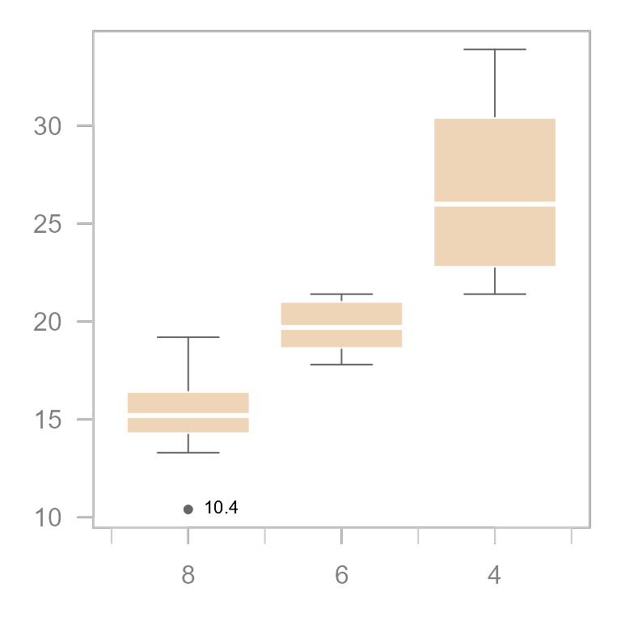
The boxplots can be plotted horizontally by setting the horiz parameter to TRUE.
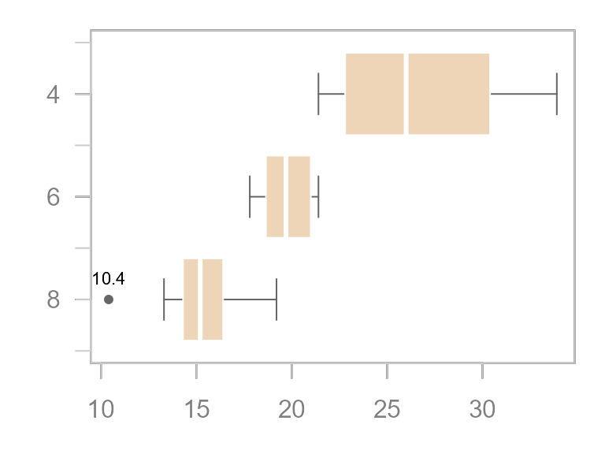
To equalize the level by median values set type to l.
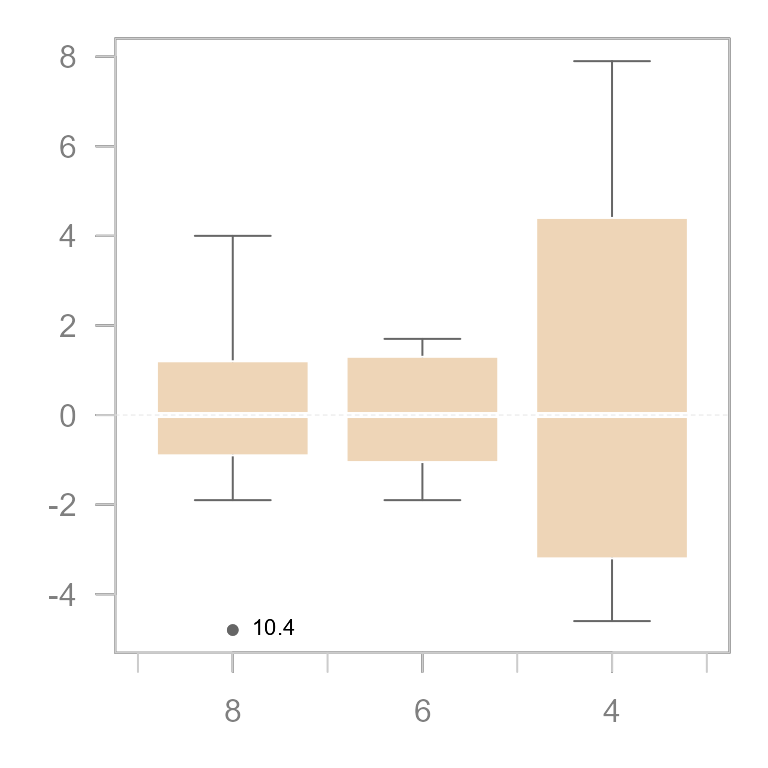
To equalize both level and spread, set type to ls.
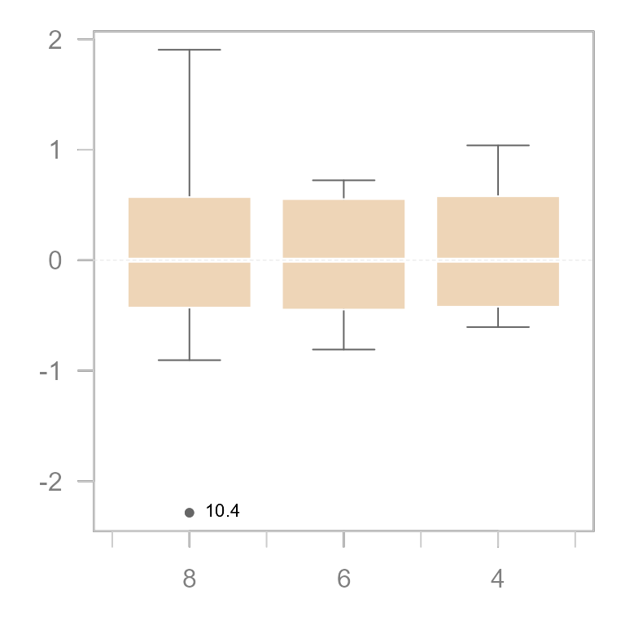
Note that with both the l and ls options, the boxplots are ordered based on the non-equalized level values.
Trim family
This is a family of trimming functions that trim a vector or dataframe by sorted vector or column values. Note that NA values need to be removed from the to-be-trimmed vector or column elements before running the trim functions.
| Parameter | Description |
|---|---|
x |
Vector used to trim the data |
dat |
data frame to trim (only applies to *_df functions) |
num |
Number of values to trim on each side |
prop |
Fraction of values to trim on each side |
eda_trim
Usage:
eda_trim will trim the lower and upper values of a vector based on a fraction of the vector length (defined by the parameter prop) or based on a number of values (defined by the parameter num). For example, if we want to remove the 10% smallest and 10% largest values from vector x, we type the following:
eda_ltrim
Usage:
eda_ltrim will trim the lower values of a vector based on a fraction (defined by the parameter prop) or by a number of points (defined by the parameter num). For example, if we want to remove 5% of the smallest values from vector x, we type the following:
To remove a number of values, we use the num option. For example, to remove the 3 smallest values, type:
eda_rtrim
Usage:
eda_rtrim works in the same way as ltrim except that the largest values are trimmed from a vector. For example, to remove the largest 10% of values from x, type:
To remove a number of largest values, use the num option. For example, to remove the 2 largest values, type:
eda_trim_df
Usage:
eda_trim_df will trim the records of a dataframe based on one column’s smallest and largest values. The column’s lower and upper trimmed values are based on their fraction (defined by the parameter prop) or by a number of records (defined by the parameter num). For example, if we want to remove the records in the dataframe trees based on the 10% smallest and 10% largest Height values, we type:
eda_trim_df(dat=trees, x=Height, prop = 0.10)
#> Girth Height Volume
#> 7 11.0 66 15.6
#> 14 11.7 69 21.3
#> 1 8.3 70 10.3
#> 19 13.7 71 25.7
#> 4 10.5 72 16.4
#> 24 16.0 72 38.3
#> 16 12.9 74 22.2
#> 23 14.5 74 36.3
#> 8 11.0 75 18.2
#> 10 11.2 75 19.9
#> 15 12.0 75 19.1
#> 12 11.4 76 21.0
#> 13 11.4 76 21.4
#> 25 16.3 77 42.6
#> 21 14.0 78 34.5
#> 11 11.3 79 24.2
#> 9 11.1 80 22.6
#> 22 14.2 80 31.7
#> 28 17.9 80 58.3
#> 29 18.0 80 51.5
#> 30 18.0 80 51.0
#> 5 10.7 81 18.8
#> 26 17.3 81 55.4
#> 27 17.5 82 55.7
#> 6 10.8 83 19.7Note that the output dataframe is sorted on the x column.
eda_ltrim_df
Usage:
eda_ltrim_df will trim the records of a dataframe associated with one column’s smallest values. The smallest values are identified based on a fraction (defined by the parameter prop) or by a number of records (defined by the parameter num). For example, if we want to remove the records in the dataframe trees based on the 25% smallest Height values, we type the following:
eda_ltrim_df(dat=trees, x=Height, prop = 0.25)
#> Girth Height Volume
#> 16 12.9 74 22.2
#> 23 14.5 74 36.3
#> 8 11.0 75 18.2
#> 10 11.2 75 19.9
#> 15 12.0 75 19.1
#> 12 11.4 76 21.0
#> 13 11.4 76 21.4
#> 25 16.3 77 42.6
#> 21 14.0 78 34.5
#> 11 11.3 79 24.2
#> 9 11.1 80 22.6
#> 22 14.2 80 31.7
#> 28 17.9 80 58.3
#> 29 18.0 80 51.5
#> 30 18.0 80 51.0
#> 5 10.7 81 18.8
#> 26 17.3 81 55.4
#> 27 17.5 82 55.7
#> 6 10.8 83 19.7
#> 17 12.9 85 33.8
#> 18 13.3 86 27.4
#> 31 20.6 87 77.0If the records associated with the 15 smallest Volume values are to be removed, then invoke the num option:
eda_ltrim_df(dat=trees, x=Volume, num = 15)
#> Girth Height Volume
#> 11 11.3 79 24.2
#> 20 13.8 64 24.9
#> 19 13.7 71 25.7
#> 18 13.3 86 27.4
#> 22 14.2 80 31.7
#> 17 12.9 85 33.8
#> 21 14.0 78 34.5
#> 23 14.5 74 36.3
#> 24 16.0 72 38.3
#> 25 16.3 77 42.6
#> 30 18.0 80 51.0
#> 29 18.0 80 51.5
#> 26 17.3 81 55.4
#> 27 17.5 82 55.7
#> 28 17.9 80 58.3
#> 31 20.6 87 77.0eda_rtrim_df
Usage:
eda_rtrim_df will trim the records of a dataframe associated with one column’s largest values. The largest values are identified based on a fraction (defined by the parameter prop) or by a number of records (defined by the parameter num). For example, if we want to remove the records in the dataframe trees associated with the 45% largest Volume values, we type the following:
eda_rtrim_df(dat=trees, x=Volume, prop = 0.45)
#> Girth Height Volume
#> 3 8.8 63 10.2
#> 1 8.3 70 10.3
#> 2 8.6 65 10.3
#> 7 11.0 66 15.6
#> 4 10.5 72 16.4
#> 8 11.0 75 18.2
#> 5 10.7 81 18.8
#> 15 12.0 75 19.1
#> 6 10.8 83 19.7
#> 10 11.2 75 19.9
#> 12 11.4 76 21.0
#> 14 11.7 69 21.3
#> 13 11.4 76 21.4
#> 16 12.9 74 22.2
#> 9 11.1 80 22.6
#> 11 11.3 79 24.2
#> 20 13.8 64 24.9If the records associated with the 20 largest Girth values are to be removed, then invoke the num option:
eda_re
Usage:
| Parameter | Description |
|---|---|
x |
x values as vector |
p |
power transformation |
tukey |
if TRUE (default), apply Tukey’s power transformation, if FALSE adopt Box_Cox transformation. |
eda_re is used to re-express data using one of two transformation techniques: Box-Cox transformation or Tukey’s power transformation.
$$ \[\begin{equation} T_{Tukey} = \begin{cases} x^p , & p \neq 0 \\ log(x), & p = 0 \\ \end{cases} \end{equation}\] $$
\[ \begin{equation} T_{Box-Cox} = \begin{cases} \frac{x^p - 1}{p}, & p \neq 0 \\ log(x), & p = 0 \end{cases} \end{equation} \]
While both transformation techniques will generate similar distributions when the power p is 0 or greater, they will differ in distributions when the power is negative. For example, when re-expressing mtcars$mpg using an inverse power (p = -1), Tukey’s re-expression will change the data order but the Box-Cox transformation will not as shown in the following plots:
plot(mpg ~ disp, mtcars, main="Original data")
plot(eda_re(mpg, -1, tukey=TRUE) ~ disp, mtcars, main="Tukey")
plot(eda_re(mpg, -1, tukey=FALSE) ~ disp, mtcars, main="Box-Cox")The original data shows a negative relationship between mpg and disp; the Tukey re-expression takes the inverse of mpg which changes the nature of the relationship between the y and x variable where whe have a positive relationship between the re-expressed mpg variable and disp (note that by simply changing the sign of the re-expressed value, -x^(-1) maintains the nature of the original relationship); the Box-Cox transformation, on the other hand, maintains this negative relationship.
The choice of re-rexpression will depend on the analysis context. For example, if you want an easily interpretable transformation then opt for the Tukey re-expression. If you want to compare the shape of transformed variables, the Box-Cox approach will be better suited.
eda_lsum
Usage:
| Parameter | Description |
|---|---|
x |
x values |
l |
number of values |
all |
generate upper, lower and mid summaries if TRUE or just generate mid summaries if FALSE |
The letter value summary was introduced by John Tukey and extends the boxplot’s 5 number summary by exploring the symmetry of the batch for depth levels other than the half (median) or the fourth (quartiles). It can be helfpul in fine-tuning re-expression parameters. For example, applying the letter value summary to the hp variable shows a consistent skew across all letter levels.
lsum <- eda_lsum(mtcars$hp,l=5)
lsum
#> letter depth lower mid upper spread
#> 1 M 16.5 123.0 123.00 123.0 0.0
#> 2 H 8.5 96.0 138.00 180.0 84.0
#> 3 E 4.5 66.0 151.75 237.5 171.5
#> 4 D 2.5 63.5 159.00 254.5 191.0
#> 5 C 1.5 57.0 178.25 299.5 242.5
with(lsum, dotchart(x=mid, labels=letter,pch=20, pt.cex=1.5) )
We can make use of the letter summaries to fine-tune a re-expression power that symmetrizes the data:
p <- c(-1/2, -1/4, 0, 1/4, 1/2)
OP <- par(mfrow=c(1,5))
for (i in p) {
lsum <- eda_lsum( eda_re(mtcars$hp,i) ,l=5)
with(lsum, dotchart(x=mid, labels=letter, pt.cex=1.5,
pch=20,main=paste("power=",i)) )
}
par(OP)The goal is to find a re-expression that minimizes systematic skew across all letter summary values. A power of -0.25 seems to do a nice job in symmetrizing the distribution.
For a detailed explanation of the letter summaries calculation click here.
eda_sl
Usage:
| Parameter | Description |
|---|---|
dat |
data frame |
x |
Categorical variable |
y |
Continuous variable |
sprd |
Choice of spreads. Either interquartile, sprd = "IQR", or fourth-spread, sprd = "frth" (default) |
The spread-level function generates a spread-level table from a univariate dataset. It pits the log of the spread (range between upper and lower fourths by default) vs. the log of the median values across all groups. The function is useful in assessing if there is a monotonically increasing or decreasing spread as a function of median. Note that this function will require that values be postive.
The following example shows that sepal length spread increases with increasing sepal length
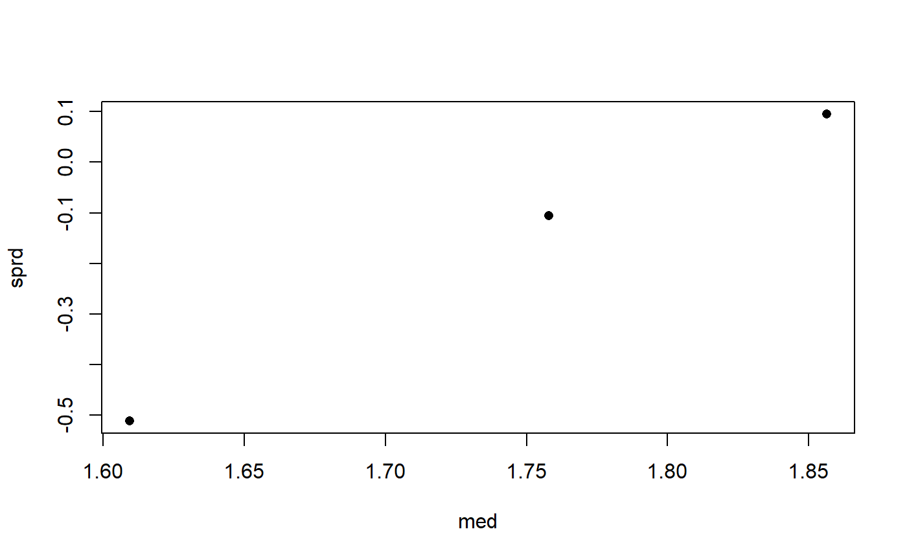
eda_lm
Usage:
eda_lm(dat, x, y, x.lab = "X", y.lab = "Y", reg = TRUE, rob=FALSE, loe = FALSE,
lm.col = rgb(1, 0.5, 0.5, 0.8), loe.col = rgb(.73, .73, 1, 1),
stats=FALSE,..., plot.d=NULL, loess.d=NULL)| Parameter | Description |
|---|---|
dat |
data frame |
x |
x values |
y |
y values |
reg |
Boolean indicating whether a least squares regression line should be plotted |
rob |
Boolean indicating if R’s robust function ‘rlm’ should be used instead of lm |
loe |
Boolean indicating if a loess curve should be fitted |
lm.col |
regression line color |
loe.col |
LOESS curve color |
stats |
Boolean indicating if regression summary statistics should be displayed |
plot.d |
list of parameters to pass to the plot sub-function |
loess.d |
list of parameters to pass to the loess.smooth sub-function |
eda_lm generates a scatter plot. It also superimposes a least squares regression line and, if requested, a LOESS curve. For example,

The scatter plot axes are scaled such that their respective standard deviations (displayed as grey dashed lines) match in length. The black solid lines show the means for both variables.
\(X\) and \(Y\) labels can be customized via the x.lab and y.lab parameters. If a label is to be split across two lines, use the \n special character.
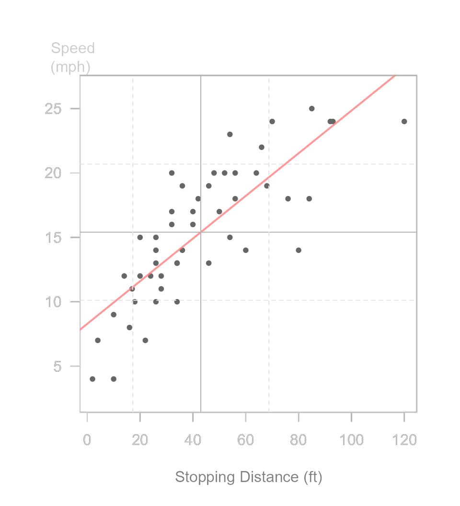
To display the regression summary statistics, set stats to TRUE.
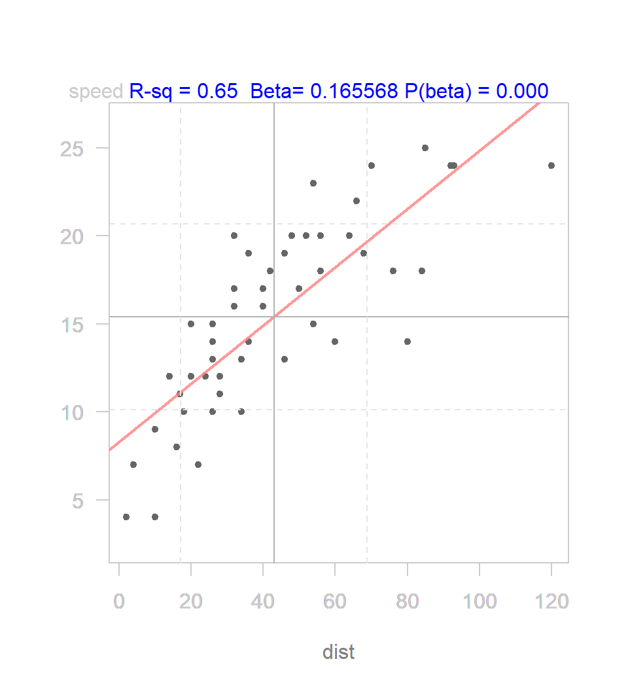
If a LOESS curve is desired, set loe to TRUE:
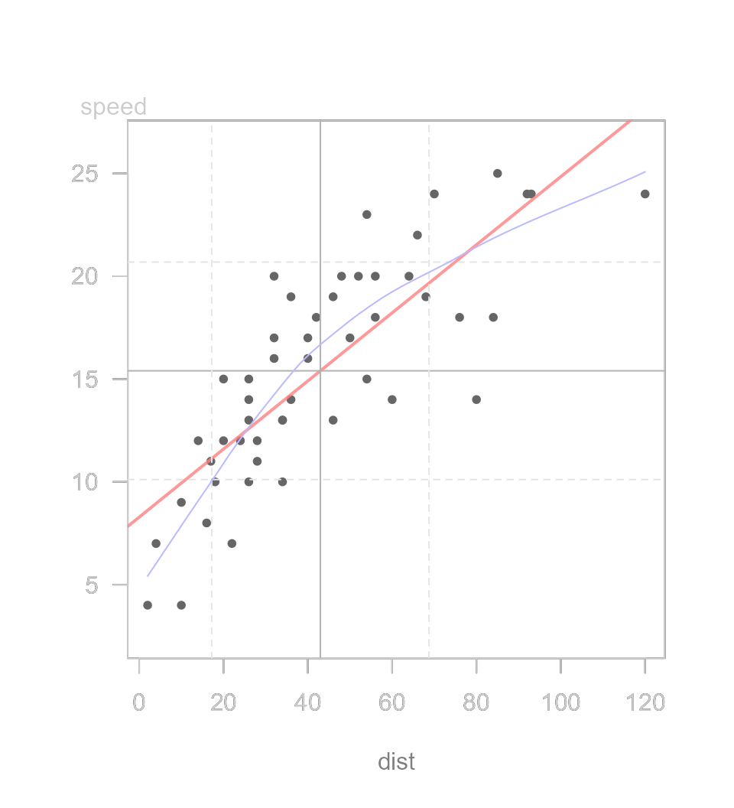
The colors for the regression line and LOESS curve can be modified by adjusting the lm.col and loe.col parameters as follows:
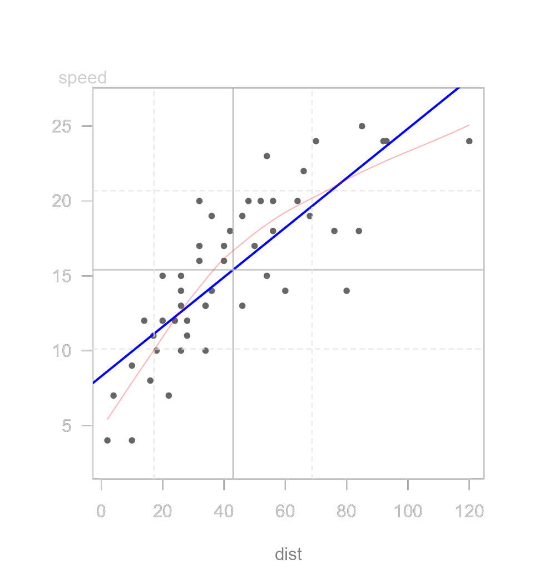
Additional parameters can be passed to the plot and the loess.smooth sub-functions via the plot.d and loess.d lists as follows:
eda_lm(dat=cars, x=dist, y=speed, loe=TRUE, plot.d = list(pch=21, col="red",bg="bisque"),
loess.d=list( span=2/5), reg=FALSE)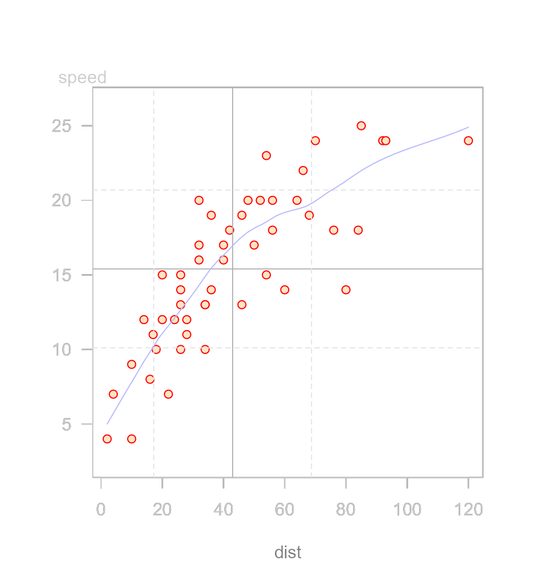
eda_3pt
Usage:
| Parameter | Description |
|---|---|
x |
Column used for the x-axis |
y |
Column used for the y-axis |
dat |
Name of dataframe |
dir |
Boolean indicating if suggested ladder of power direction should be displayed |
eda_3pt will generate a scatter plot from two variables. It will also generate a three-point summary by dividing the dataset into three approximately equal groups (based on the \(x\) values) and summarize these groups by computing their respective medians. Two half-slopes are then used to join the three points. Note that matching \(x\) values are lumped into the same batch which can lead to unequal group sizes. The motivation behind this plot is to use the three-point summary to provide a robust assessment of the type of relationship between both variables. Such plots are often used to help guide re-expression of the variables \(x\) or \(y\) or both for the sole purpose of straightening the \(x\)-\(y\) relationship.
For example, to explore the relationship between stopping distance and speed we can generate the following plot.
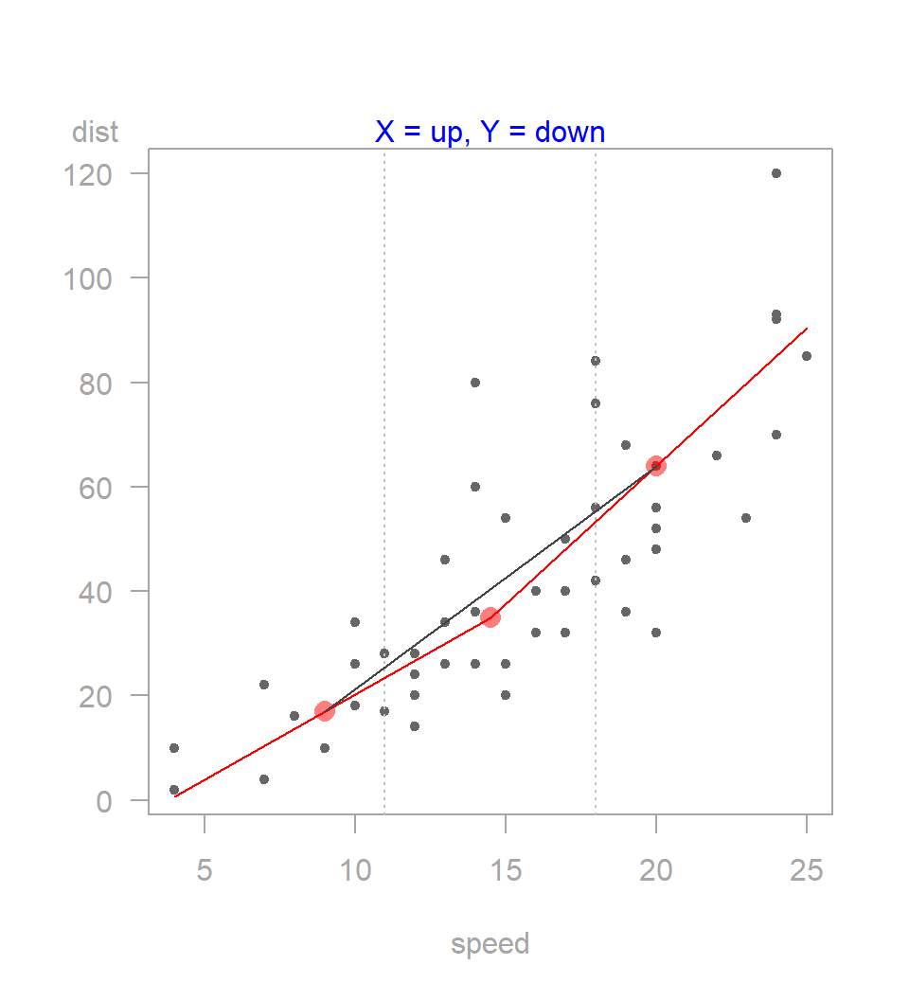
The red points represent the summary locations of each group, the red solid lines are the half-slopes, and the grey solid slope linking both tail-end groups is used to help assess the straightness of the half-slopes. The vertical dashed lines delineate the three groups; points falling on the line belong to the group to the left.
The function also returns a list. The ratio between both half-slopes is stored in the hsrtio component (e.g. pt3$hsrtio). The closer the ratio is to one, the straighter the relationship. In our example, the ratio is 1.611.
By default, the function displays the suggested direction of re-expression along the ladder of powers (the blue text above the plot). An UP direction suggests that the variable be transformed using higher powers such as \(x^2\) or \(x^3\). A DOWN direction suggests that the variable be transformed using lower powers such as \(\sqrt{x}\) or \(log(x)\). If suggested directions of re-expression is not desired, then set the parameter dir=FALSE.
Continuing with this example, we may choose to square the speed. Here, we’ll use the eda_re() function which will apply a Tukey power transformation to the speed values. We’ll also customize the x-axis label by indicating that the x-values are squared.

This transformation does a better job at aligning the two half-slopes. The half-slopes ratio (pt3b$hsrtio) is 1.101 which is an improvement over the original half-slopes ratio.
Note that instead of transforming the x-values, we could have transformed the y-values. For example, we could have taken the cube root of breaking distance as follows:
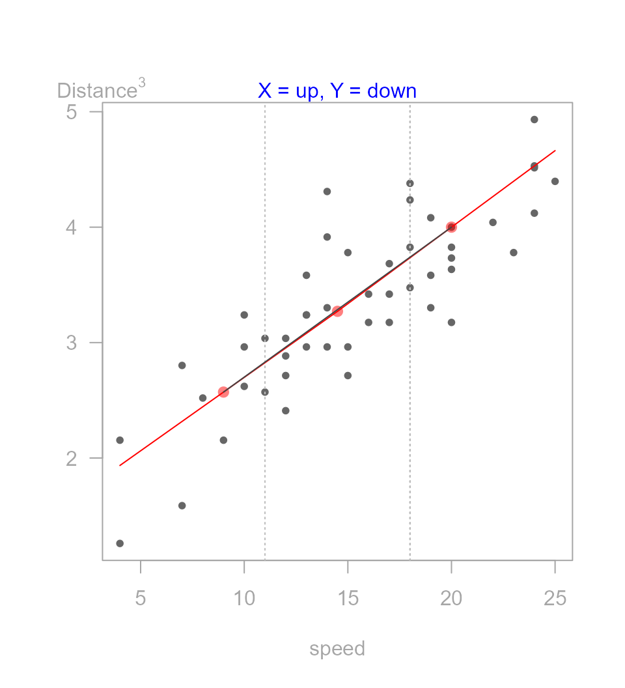
This seems to be an even bigger improvement over the last re-expression with a half-slopes ratio of 1.043.
eda_unipow
Usage:
eda_unipow(x, p = c(2, 1, 1/2, 0.33, 0, -0.33, -1/2, -1, -2), bins=5, tukey=TRUE,
cex.main=1.3, col="#DDDDDD",border="#AAAAAA",
title="Re-expressed data via ladder of powers", ...)| Parameter | Description |
|---|---|
x |
Vector of values |
p |
Ladder of powers |
bins |
Number of bins to display in the histogram |
cex.main |
Size of title for each histogram plot |
tukey |
If TRUE (default), apply Tukey’s power transformation, if FALSE apply Box-Cox transformation. |
... |
Additional parameters to be passed to the hist sub-function |
eda_unipow generates a matrix of histograms and boxplots for various re-expressions of the data x. The values are re-expressed using either the Tukey power transformation (default) or the Box-Cox transformation (see eda_re for more information on these transformation techniques).
The default ladder of powers consists of 2, 1, 0.5, 0.33, 0, -.33, -0.5, -1, -2 where the power of 0 is substituted with the \(log\) function. Note that a power of \(1\) gives the raw (original) data.
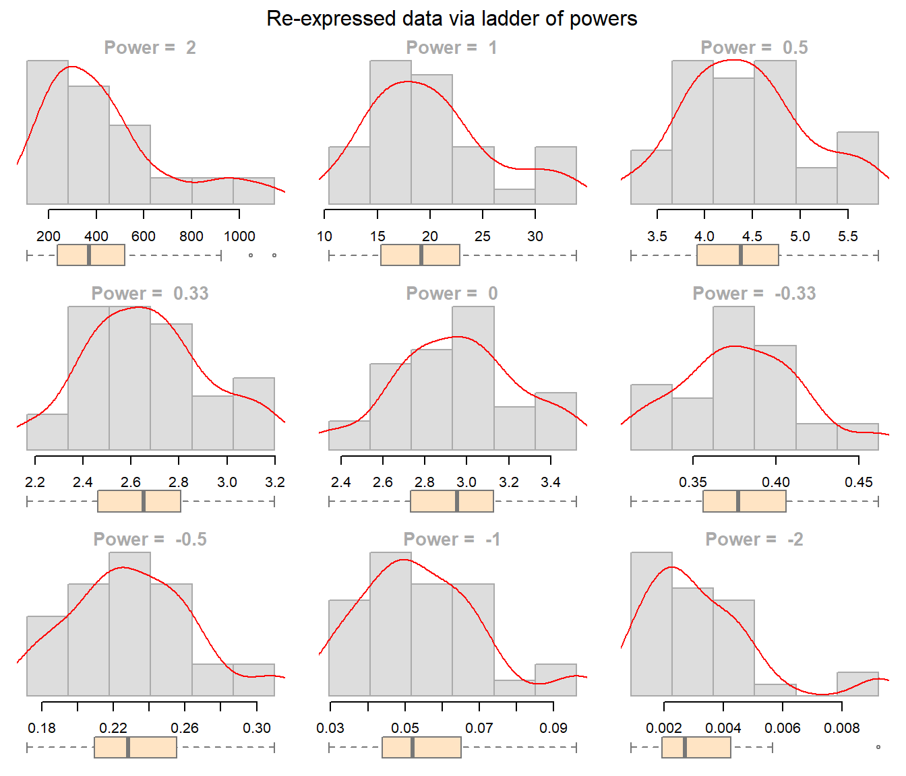
But be mindful of your input values since some re-expressions may not work such as log(0). For example, re-expressing the yearly number of sunspots using the default ladder of powers generates the following error.
eda_unipow(sunspot.year)
#> Error in eda_unipow(sunspot.year):
#> One or more values did not return a valid
#> re-expression. For example, a value of 0 will
#> return an error if a log transformation is chosen.This is because sunspot.year has three 0 values.
These values will generate either a -Inf if log transformed or a Inf if raised to a negative number (e.g. 0^(-0.33)).
To remedy this, we can either remove the problematic values, or adjust the ladder of powers. E.g.,
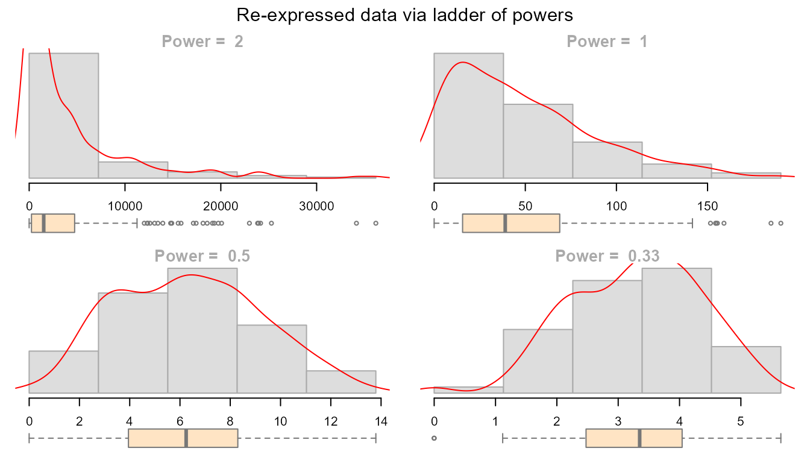
Since we have a relatively large dataset, we can increase the number of bins as follows:
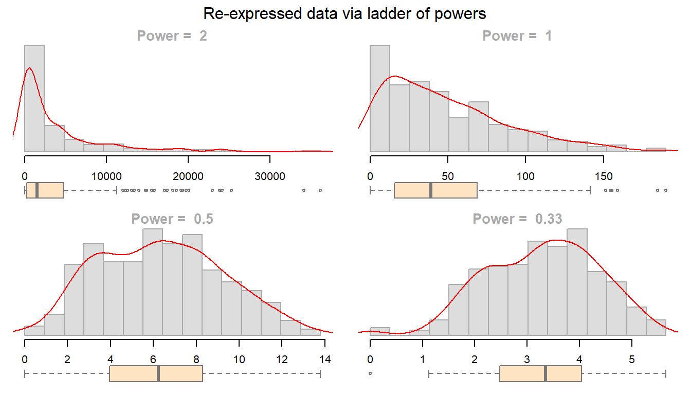
Note that you might need to reset the plotting device by typing dev.off() if you encounter difficulty generating plots after executing the eda_unipow function.
eda_bipow
Usage:
| Parameter | Description |
|---|---|
dat |
Data frame |
x |
x values |
y |
y values |
p |
Ladder of powers (the number of powers is fixed at 5) |
tukey |
If TRUE (default), apply Tukey’s power transformation, if FALSE apply Box-Cox transformation. |
... |
Additional parameters to be passed to the plot sub-function |
eda_bipow generates a matrix of scatter plots and boxplots of various re-expressions of both \(x\) and \(y\) values. The 3-point summary and associated half-slopes are also plotted (this function makes use of the eda_3pt function). The values are re-expressed using either the Tukey power transformation (default) or the Box-Cox transformation (see eda_re for more information on these transformation techniques).
The default ladder of powers consists of 3, 2, 1, .5, 0 where the power of 0 is substituted with the \(log\) function. Note that a power of \(1\) gives the raw (original) data.
For example, the following line of code displays the bivariate relationship between stopping distance and speed using different ladder of powers.

Notice how the medians in the boxplot match the middle summary point (in red) for both the \(x\) and \(y\) values–as expected.
eda_rline
Usage:
| Parameter | Description |
|---|---|
dat |
Data frame |
x |
x values |
y |
y values |
For a detailed discussion on the resistant line, see the accompanying vignette.